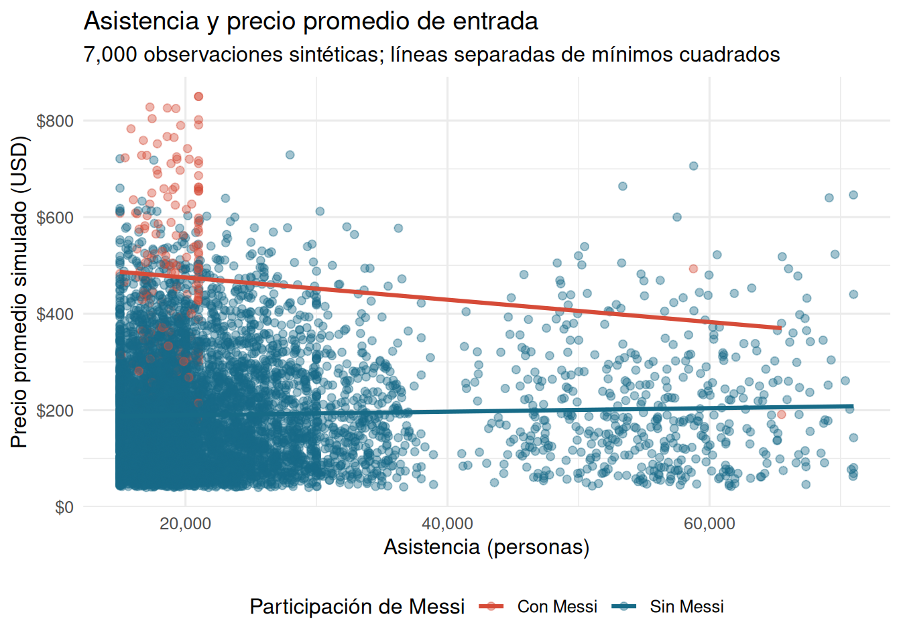
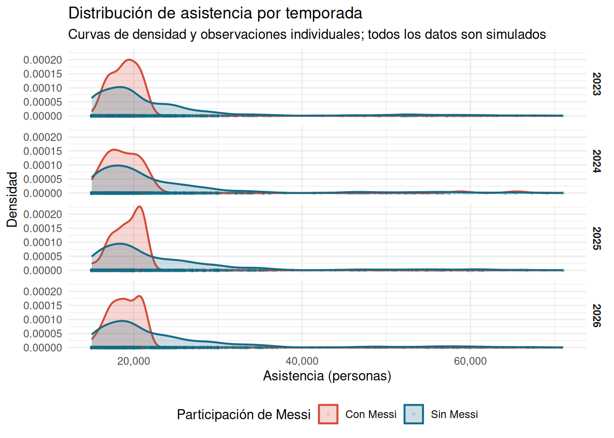
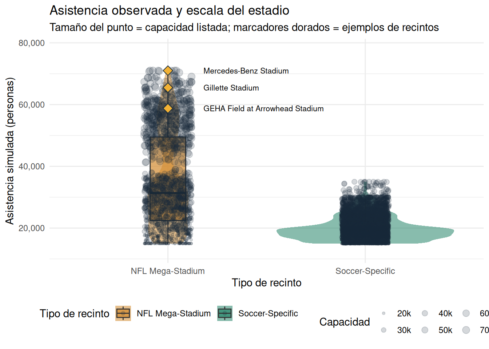
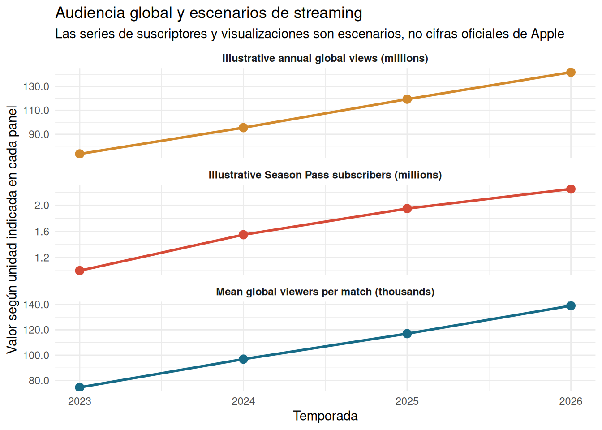

# A tibble: 4 × 5
Season `Simulated observations` `Mean attendance` `Mean ticket price`
<int> <chr> <chr> <chr>
1 2023 1,740 22,691 $199
2 2024 1,720 23,014 $200
3 2025 1,770 23,451 $190
4 2026 1,770 23,605 $203
# ℹ 1 more variable: `Mean viewers per match (000s)` <chr>MLS Transformation & The Messi Impact (2023-2026)
Executive summary
Major League Soccer’s recent transformation combines the arrival of Lionel Messi at Inter Miami in July 2023 with changes that were already underway: expanding club markets, growing attendance, a global Apple distribution agreement, and increasing interest from commercial partners. Messi created an unusually visible demand shock for selected fixtures, but his arrival alone cannot explain league-wide growth. This report uses four complementary views to explore attendance, ticket prices, venue scale, and audience development across 2023-2026.
The analysis uses a reproducible synthetic dataset of 7,000 match observations, not an official MLS match log. All simulated records, including Messi involvement, ticket prices, stadium attendance, and TV audiences, are explicitly illustrative. The 30-team roster reflects the league’s expansion, with San Diego FC entering the synthetic schedule in 2025. The 2026 season is modeled as a full season for comparability, not represented as final observed data.
Data and method
Each active team-season contributes observations, and a fixed random seed makes the dataset repeatable. Messi-involved games become possible after his July 2023 arrival and occur at a higher modeled rate in subsequent seasons. Venue relocations to Arrowhead and Gillette are represented as illustrative events; Atlanta’s Mercedes-Benz Stadium is represented as a regular large-venue context. Match-level TV viewership is simulated. Annual subscriber and global view totals in the final chart are scenario inputs and should not be mistaken for Apple’s unpublished audited totals.
The annual table is a scale check, not an official MLS attendance series. The synthetic rows are distributed across active team-season cells to avoid the common problem of a large random sample accidentally omitting a club or season. Every numeric value below is generated from the stated assumptions.
Gráfico 1: Asistencia y precio de entrada
The main scatterplot tests whether the modeled match-level relationship between crowd size and average ticket price differs for games involving Messi. Each dot is one of the 7,000 synthetic observations; semi-transparency reduces overplotting while preserving dense regions. Separate linear trend lines summarize each category. Because ticket prices and attendance are both generated in the same model, the slopes are descriptive and must not be interpreted as a causal estimate of Messi’s effect.

Read the red series as a modeled high-demand scenario, not as evidence that every Messi match commanded the same price premium. In real ticket markets, averages vary with opponent, seat inventory, fees, resale activity, venue configuration, and when a ticket is purchased. A rigorous causal analysis would compare matched fixtures and use observed ticket transactions while controlling for those factors.
Gráfico 2: Distribución de asistencia por temporada
The second visualization puts the four annual distributions side by side in a vertical facet grid. Density curves reveal the shape and upper tail of attendance, while the jittered observations show where individual simulated matches fall. The 2023 panel includes a deliberately modeled Messi window beginning July 21, the date of his Inter Miami debut; it is therefore the clearest panel for seeing how a midseason shock can coexist with a pre-existing annual baseline. The 2024-2026 panels use a higher modeled share of Messi-involved matches.

The annual facets help separate distribution changes from isolated record crowds. They do not prove that the league-wide attendance baseline jumped because of Messi: the simulation intentionally raises the probability of high-attendance Messi-linked matches, while MLS attendance was already increasing before 2023. The July 2023 boundary also cautions against labeling the entire 2023 season “post-Messi.”
Gráfico 3: Recintos, capacidad y asistencia
Venue capacity changes the interpretation of a raw attendance count. A 25,000-person crowd can fill a soccer-specific ground, while a similar crowd occupies only part of an NFL stadium. This violin-and-boxplot comparison shows match attendance by venue type; jittered points retain individual observations, and point size encodes the listed capacity. The three named markers identify selected simulated examples for Mercedes-Benz Stadium, Arrowhead, and Gillette, rather than claiming that a particular synthetic record is the historical match attendance.

Arrowhead and Gillette have hosted relocated high-profile matches with crowds reported above 72,000 and 65,000 respectively; Atlanta United’s Mercedes-Benz Stadium regularly demonstrates the league’s ability to draw very large crowds in a flexible NFL venue. Such fixtures are exceptional and should not be confused with ordinary soccer-stadium capacity or average attendance. The synthetic comparison emphasizes that capacity, utilization, and headcount answer different questions; the highlighted points are illustrative, not historical rows.
Gráfico 4: Audiencia y alcance de Season Pass
MLS Season Pass changed the distribution model by putting league matches in a single global streaming product, with English- and Spanish-language options. Apple and MLS have not published a complete audited season-by-season subscriber series or global viewing totals. To avoid presenting private metrics as facts, this chart separates the simulated mean viewers per match from explicitly illustrative annual global-view and subscriber scenarios. Each metric receives its own facet and scale so unit differences remain visible.

The match-viewer series comes from the synthetic tv_viewers_k field; annual global views are an annualized scenario derived from those simulated match audiences, and the subscriber path is a separate illustrative assumption. Industry coverage has described Season Pass subscriber growth as more than doubling and estimates above two million, but those reports are not an audited public subscriber ledger. Spanish-language audiences have exceeded half for some Messi-era broadcasts, a meaningful signal of international reach but not a league-wide language share for every match.
Synthesis and limitations
The four views tell a coherent but deliberately bounded story: Messi-linked matches are modeled with more demand, larger event venues can absorb exceptional crowds, annual distributions can shift without every match being a sellout, and global streaming reach matters even when precise subscription data remain private. MLS’s growth also reflects expansion, existing fan bases, stadium investment, media distribution, and the approaching 2026 FIFA World Cup. The World Cup creates an opportunity to convert temporary attention into long-term supporters, but it does not guarantee future attendance or revenue.
- The 7,000 rows are synthetic observations, not official MLS attendance, ticket, or viewing records.
- Match-level ticket prices, TV audiences, and Messi involvement are generated from assumptions; trend lines are descriptive and not causal estimates.
- Subscriber and global-view series are illustrative scenarios because comparable audited MLS Season Pass totals are not public.
- Venue capacity reflects modeled soccer configurations for some multipurpose stadiums. A listed stadium’s full event capacity is not necessarily the capacity used for a soccer match.
- The league had 29 clubs in 2023-2024 and 30 from San Diego FC’s 2025 entry; the synthetic roster accounts for that timing.
Selected references
- MLS newsroom provides league attendance announcements and match coverage.
- Apple Newsroom provides Apple’s official announcements about MLS Season Pass and Lionel Messi.
- FIFA: 2026 World Cup provides the tournament context.